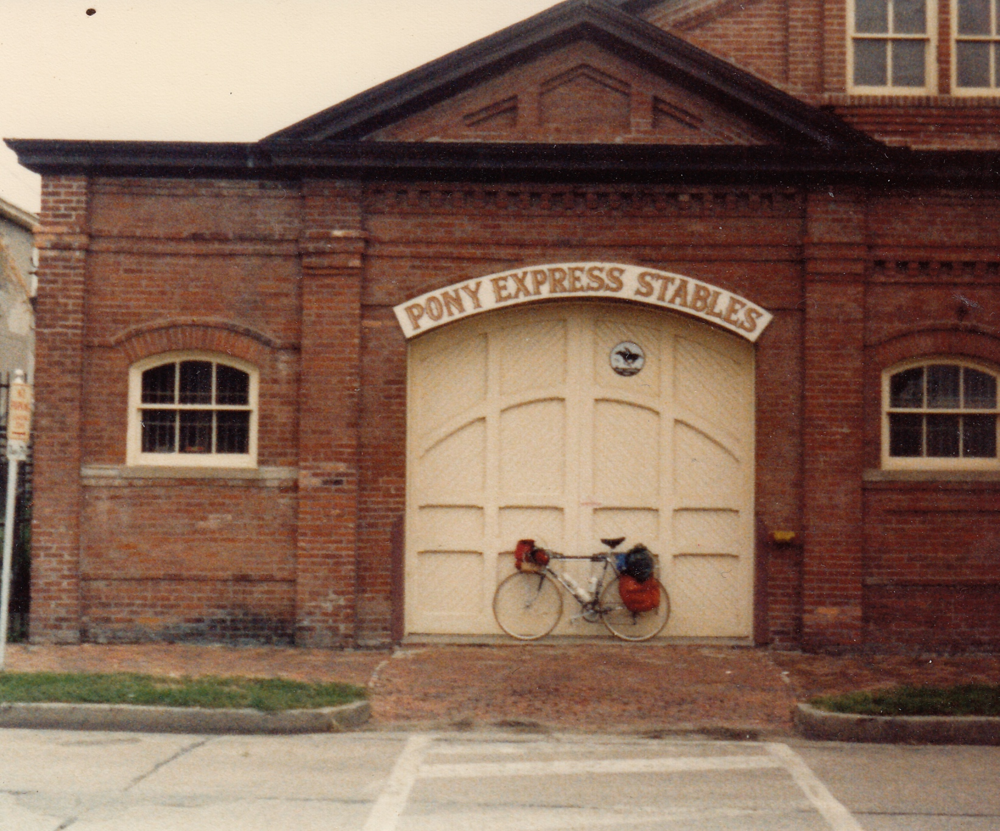
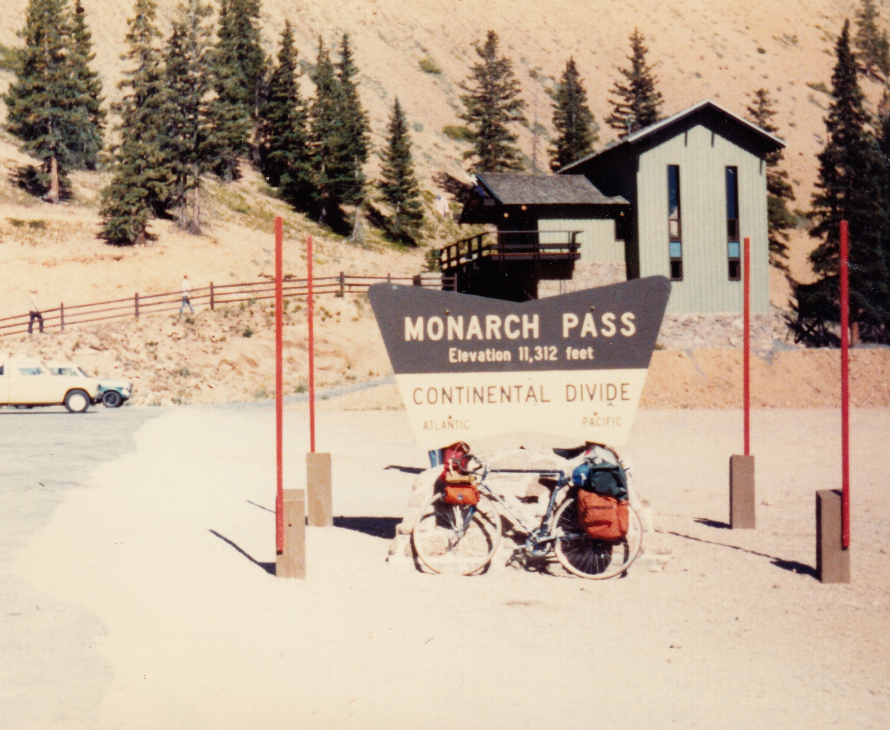
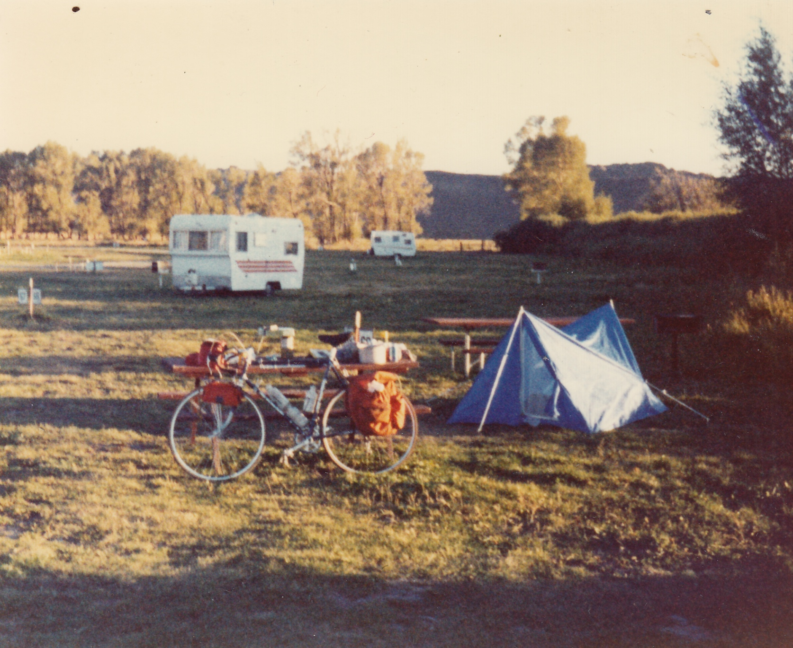
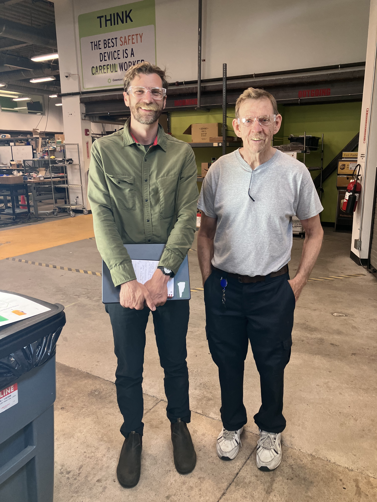
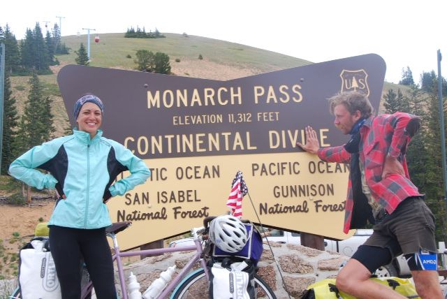

I met Jim at work and we became good friends when I realized he was me from the future. He had also ridden his bike across the country. He rode the same route as Bianca and I but backwards including the highest-elevation pass of the trip: Monarch Pass in Colorado.
The first three photos are print that I scanned the Jim loaned me. Here’s Bianca and I at the same Monarch Pass sign 40 years after Jim.
